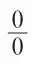

英文
英文阿瑟·爱丁顿
编者按
10年前，阿瑟·爱丁顿在《自然》杂志上发表文章声称实际上所有的知名物理学家都是决定论者，至少他们面对物理过程时都是如此。物理学家们认为他们拥有一个因果相连的庞大科学体系——最明显的例子是经典力学领域，并且人们还在利用这种模式解释更多的现象。但现在量子理论改变了所有的一切，人们对此的反应各不相同：有人将信将疑，有人冷嘲热讽，还有些人漠不关心。然而，爱丁顿指出：不能认为新出现的非决定论是一种反科学的方法。他把旧有的决定论或称“基本定律”比作科学上的金本位，现在被“第二代”货币所取代。现在，大多数物理学家都不能理解为什么这些基本定律曾经受到过如此的推崇。 英文
在理论物理领域里，决定论的身影渐渐淡去。人们对它的退出持有各种不同的观点。有些作者对此表示怀疑，不相信决定论真的被排除了；有些则认为它仅仅是物理学领域内部的变化，对一般的哲学思想没有任何影响；另一些人认为这是对奇怪现象的合理性解释；还有一部分人冷眼旁观，等着看决定论是否会卷土重来。 英文
摒弃决定论绝不是要放弃科学方法；在对观测到的现象进行数学分析时，它也的确提高了分析的能力和精度。从另一方面来说，我无法认同那些低估了这个变化所具有的一般哲学意义的人。我们不能轻描淡写地摆脱两百多年来被自然科学所一致采取的看法；并且这使得我们必须重新审视一个有关存在物的复杂问题。在这里，我将主要就物质世界进行探讨，而几乎不涉及思想决定论和自由意志。最好把它们留给那些更加善于探讨此类问题的人，只要他们能意识到目前在物理学方面已经出现的新情况。而我目前几乎看不出任何意识到这种情况的迹象。 英文
决定论的定义
让我们首先确保我们对决定论的含义有一致的认识。我要引用三种定义或描述给你们作参考。第一种是一位数学家（拉普拉斯）的叙述：
我们应把目前宇宙的状态看作是它先前状态的结果和未来状态的原因。假定有这么一位天才，他在某个确定的瞬间知道了所有驱动自然界运转的力以及组成宇宙的所有实体的几个位置，如果他还具有足够的才智来收集分析这些数据的话，他就能够把从最大物体到最小原子的运动都包括在同一个公式中。对他来说，没有什么是不确定的，过去和未来全在他的掌握之中。人类的完美主义思想为天文学描绘了一个如此聪慧的人的大致轮廓。……对我们刚才幻想中的这位天才而言，他为探寻到真理所做的努力几乎是不受限制的。 英文
第二种定义来自于一位哲学家（布罗德）的观点：
“决定论”指的是下述学说：设S为任意一个物质，ψ为任意一种特性，t为任意一个时刻。假设t时刻特性为ψ的物质S实际上处于状态δ，那么认为：世界上的任意其他物质都处于实际状态，并且物质S本来应该处于关于特性ψ的其他两种状态中的一种的复合推断是不可能成立的。［这三种状态（δ是其中一种）分别为：具备特性ψ、不具备特性ψ和正在变化的状态。］ 英文
第三种说法则是一位诗人（奥马尔·海亚姆）提出来的：
最初的泥丸捏成了最终的人形，
最后的收成便是那最初的种子：
天地开辟时的老文章写就了天地掩闭时的字句。 英文
我选择诗人的描述作为我对决定论的理解标准。看起来这可能是个奇怪的选择，但是毫无疑问他的描述正是我们提到决定论时脑海里所浮现的想法。其他的两个定义则需以怀疑的态度仔细研究，恐怕它们之中会存在某些陷阱。当我们提到现在所描绘的物质世界时，指的并不是那种“天地开辟时的老文章写就了天地掩闭时的字句”的宇宙。我们要让人明白放弃决定论并不是一种巧妙的推托，而是用一种最平实的语言就可以理解的。 英文
值得特别注意的是三种定义都引入了时间元素。决定论不仅仅是要假定存在的起因，而是要假定起因在早先就已经存在了。决定论意味着预先决定。因此在任何有关决定论的争论中，确定所谓起因的时间是一个非常重要的问题，我们必须让它们为自身的起源提供证明。 英文
十年前，至少是在考虑无机系统的物理现象时，几乎所有知名的物理学家都是，或者认为他们自己是，一个决定论者。他们确信自己已经发现了一个严格的因果律体系，并且相信科学的首要目的就是尽可能地把我们的日常体验纳入到这个体系内。物理科学中的方法、定义以及概念受到这种决定论假设过多的限制，以至于人们把因果律体系的局限性（如果有的话）看作是物理科学的极限。 英文
要了解已经出现的改变，我们仅仅需要参考最近出版的一本书——狄拉克所著的《量子力学》，它比任何人都更深层次地触及到物质世界的基本结构。我不知道狄拉克是否是一个决定论者，他很有可能一直都坚信存在着严格的因果律体系。但是值得注意的是，在这本书里他没有提及这个问题。在对已经可以确定的事物运行规律的最全面的叙述中，并没有提到因果律。 英文
理论物理研究目标中的这样一个改变是经过深思熟虑的。如果年长些的物理学家被问及为什么科学的发展就在于把越来越多的现象纳入决定论的体系，那么他最有力的回应便是：“除此之外还有什么别的办法吗？”狄拉克所写的那样一本书给出了答案。因为新的研究目标已经产生了非凡的效果，迄今仍难以给出精确数学处理的物理现象现在也可以计算出来了，并且很多预言得到了实验的验证。现在我们应该明白，非决定论的规律和决定论的规律一样有效，都可以作为实际预测的原则。所有实践都证明，我们必须把在这个新分支方向上取得的进展看作是知识的巨大进步。毫无疑问，有些人会说：“对，但为了避开障碍物，通常会绕道而行。目前我们已经越过了障碍，可以重新回到以前的老路上去了。”不过我却这样认为：我们就像那些探险家，他们最后终于意识到，除了去探寻西北通道以外，还有其他值得追求的事业。我们不需要过分看重老水手的预言，他们把这些事业当作是一种暂时性的消遣，随后还是要回到“地理大发现这个终极目标上”。但此刻我不关心那些预言和反预言的论调，重要的是把握目前的实际情况。 英文
次级定律
首先，让我们了解一下物理科学中的新目标是怎样出现的。我们观察自然过程中的某些规律，然后把它们明确表达为“自然定律”。这些定律既可以用肯定句式陈述也可以用否定句式陈述，比如“你应该”或者“你不应该”。对于当前的需要，用否定句式来阐明最为方便。在我们的生活经历中会出现以上两种规律：
（a）我们绝不会见到一个等边三角形具有不相等的角。
（b）在打桥牌时我们绝不会碰到手中有13张王牌的情况。 英文
按照我们通常的观点，我们可以用根本不同的方法来解释这些规则。我们会说出现第一种情况是因为不可能发生相反的情况；出现第二种情况是因为相反情况发生的概率极小。 英文
这完全是理论上的区分。观测本身不能说明某个特定的规律属于哪种类型。我们认为“不可能”和“概率极小”都可以对在实践中观测到的一致性做出合理的解释，早期的理论非常随意地对某些一致性以一种方式做出解释，而对其他的一致性又以另一种方式做出解释。在新物理学中，我们不作这样的区分；显然地，统一应基于标准（b），而不是（a）。我们无法假设存在一种使手中有13张王牌的情况不可能发生的自然规律，但可以认为找不到不等角的等边三角形是因为这样的三角形出现的概率极小。 英文
然而，我们必须首先顾及过去的观点，即是把（a）区分出来作为一种特殊规律。因此，我们有了两类自然定律。地球持续围绕太阳运行是因为它不可能逃离开。热量从高温物体流向低温物体，是因为它流向相反方向的概率极小。我把第一种类型叫做基本定律，而把第二种叫做次级定律。对次级定律的认识有如楔子的尖端终于劈开了决定论的框架。 英文
对于实际的目的来说，基本定律和次级定律发挥了同样严格的控制作用。在次级定律中提到的不可能性发生的概率非常大，即使出现了个别反例，也不会得到认真对待。如果热量从你身体上流向了火，你会十分惊讶，因为这样一来你站在火前就会感到寒冷刺骨，尽管在物理理论中这种情况并非不可能发生，而不过是发生的概率极小罢了。在决定论体系中，显然任何事情都不是偶然发生的；该体系中的所有定律都不可能出现任何反例。只要物理学的目标是要建立一个决定论的体系，那么我们对次级定律的研究只能走进死胡同，因为这样的研究只会得到有可能发生的结果。决定论者不会认可这样的规则：只要运气还可以我就能感到火的温暖。他承认这是一种可能出现的结果，可是他还会补充道，其物理基础应该以另一条定律来规定，即无论有没有运气，火都会使我温暖。 英文
借用一个遗传学的相似概念，决定论可以被看作是一种显性性状。我们能够（事实上是必须）把次级的非决定论置于任何一个基本的决定论体系之中，非决定论会告诉我们某件事情很有可能发生，然而那些告诉我们某件事情肯定会发生的显性定律优先于非决定论的定律。因此，决定论对其内部的非决定论定律的发展泰然视之。有什么关系呢？决定论的定律仍然是占优势地位的。没有人能预料见到当非决定论定律发展成熟后会独树一帜，取代占主导地位的母体。有一个游戏，名字叫做“猜数字”。在经过各种加倍、相加和其他运算后，最终达到“去掉最初所想的数字”的目的。在物理学中，我们已经实现了这样的一个目标，现在到了把我们最初想到的决定论去掉的时候了。 英文
在决定论体系中，次级定律的发展是引人注目的，一部分原本利用基本定律来处理的问题逐渐开始偏向使用次级定律。有一段时间，物理学中的一些最前沿的分支只采用次级定律进行研究。可能会有这样的情况，物理学家在继续宣称自己忠实于基本定律的同时已经不再使用它了。基本定律有如存放在金库中的黄金，而次级定律则是真正用于交易的纸币。没有人会介意，大家都认为纸币以黄金为基础是理所当然的事情。最终危机出现了，物理学放弃了金本位制。这是最近才发生的，并且对结果将怎样人们说法不一。我确信，爱因斯坦教授对这种损失惨重的通货膨胀感到担忧，他强烈要求回归到健全的货币体系——当然，要以我们能找到这种货币体系为前提。不过大部分理论物理学家都已经开始质疑为什么应该认为现在闲置着的金子具有如此神奇的特性。无论如何，事情已经发生了，其直接的结果是使原子物理学取得了一个极大的进步。 英文
我们已经知道，非决定论定律，或者说次级定律，解释了由经验总结的规律，因此它同样可以像基本定律一样很好地预测未来。这些预测和规律与我们在大多数情况下观测到的大量粒子的平均状态相关。当我们处理数目较少的粒子时，不确定性开始变得明显起来，而预测变得更像是在冒险。直到最后，单个原子或电子的行为在很大程度上是不确定的。虽然有些过程比另一些过程更有可能发生，但是在通常情况下，预测一个电子将会怎样就如同预测一匹马一样难以确定。 英文
人们通常会对上述观点表示反对：我们不能确定电子将会如何运动的原因不是因为非决定论而是因为无知。有人声称，在电子内部或者它的周围环境中存在着确定其未来的某些特征因素，只是物理学家还不懂得如何才能检测到它。稍后你们就会知道我是如何看待这个观点的。但是这里我要指出，如果一个物理学家要在更广泛的意义上探讨决定论对我们的生活水平以及决策可靠性的影响，他就必须以他已经发现的物理现象为论据，而不能基于他推测出的可能会发现的现象。首先他应该搞清楚的是，他已经不再拥有占据了很久的决定论主要支持者的地位，并且他对物质世界中的任何决定论定律都毫无所知。他将退到一边，让其他人——哲学家、心理学家、神学家站出来说明他们以其他方式发现了决定论的迹象†，如果他们能找到的话。如果没有人挺身而出，那么决定论这个假设也许会被丢弃，也就不会引出物理学是否真的与决定论相抵触的问题。寻找反对者的努力都是徒劳的，除非有人自告奋勇。 英文
推理性的认识
现在有必要进一步审视我们对于物质世界的认识的本质。 英文
我们对物理对象的所有认识都是通过推理获得的。我们没有办法与它们直接接触，但是它们发射或散射光波，并把压力传递给相邻的物质。它们就像广播电台一样发射我们可以接收到的信号。在传输的一个阶段信号沿着我们身体里的神经传递，最终在我们的头脑里形成视觉、触觉以及其他感觉。通过这些远程效应，我们必须反过来辨明在传输链的另一端的物质的性质。我们头脑中产生的图像并不是物质本身，尽管它是与物质相关的信息的来源；把头脑中的物质图像混同为物质的实体就等于把线索混同于罪犯。如果不存在外部世界与它在我们头脑中形成的图像之间的对应，就不可能有我们的生活。在日常生活中，自然选择（必要时需要补充精神病委员的鉴定结果）所得到的对应似乎就已经足够满足实际需要了。但是我们不能依赖这些对应，在物理领域内，我们不能接受根据图像得到的任何信息，除非经过更为精确的推理方法的确证。 英文
物理学的外部世界就是这样一个充满推理的世界。这些推理只有程度上的差别，而没有本质上的区分。我手中的常见物体，与从照相底片上的模糊图像推断出的一颗遥远恒星，或从天王星运动的不规则性推出的“未知”行星一样，都可以由推论得到。有时候我们认为电子的不确定性高于恒星。但其实它们根本没有什么区别。利用一台名为盖革计数器的仪器，我们可以逐个将电子计数，犹如我们对天上的星星逐个计数一样。在上述两种情况下，计数实际上都取决于物质的远程影像。当然，对于电子错误的或根据不充分的推断会得到不正确的性质，所以对于我们所计量的对象，我们有可能得到一个完全错误的概念；然而我们在计数星星时，也同样会存在这样的情况。 英文
在这个充满推理的宇宙里，过去、现在和未来似乎是同时存在的，需要我们用科学分析法去区分。利用特定的推理规律，即引力定律，我们可以推断出某个恒星周边在现在或过去存在一个不发光的伴星；利用这个定律我们同样可以推断，在1999年8月11日，由于太阳、地球和月亮的相对位置会出现一次日全食。1999年将要在康沃尔出现的月亮阴影已经被推算了出来。这个推算在1999年到来和日食被观测到之前是不会改变的，我们只会不断替换推断出阴影的方法。阴影将永远是一个推断。我所说的阴影是外部世界中的物体或条件；其实我们对黑暗的感知并不是物理上的阴影，而是可以从黑暗的存在推断出来的其中一种可能的线索。 英文
在决定论问题中最重要的一点是我们对于过去的推断。严格说来，我们通过视觉、听觉、触觉直接得来的推断在时间上都有很短的滞后；但这种滞后往往是比较重要的。假如我们想知道某种盐类的构成，我们会把它放入试管内，然后加入特定的试剂，最后得到结论，原来它是硝酸银。在我们对它做了处理之后它已经不再是硝酸银了。这就是一个回顾性推理的例子：我们推出的结论不是“是X”，而是“曾经是X”。 英文
我们从一开始注意到，在讨论决定论的时候，那些所谓的原因必须提供自己的出生证明，这样我们才能够知道它们是否的确是早已存在的。就此而论，回顾性推理是非常不可靠的，因为它需要提前提供证明。上面提到的实验证明了物质的化学成分，然而鉴定书上所证实的物质的存在日期要先于实验的日期。这种提前通常是非常合理的，但在实际操作中更加危险，因为它让我们产生了一种虚假的安全感。 英文
回顾性的特征
为了表明回顾性的推理是如何被滥用的，假定如果不破坏物质就没有任何办法获知它的化学成分。根据这个假设，一个化学家在他进行实验前不会知道他所要测试的物质的化学成分，于是他所做的所有实验的结果都是不可预见的。那么他是否必须承认，所有的化学规律都是杂乱无章的？聪明人知道要先忽略掉这些不重要的障碍。如果他足够谨慎，从不在实验前说出自己的实验要去证明什么，那么他也许会对自然齐一性问题发表富有启发性的演讲。他把一根燃烧的火柴扔进一瓶气体中，气体燃烧起来。然后他说，“你们看，氢气是易燃的”。或者是火柴熄灭了。“这证明氮气是不能助燃的”。或者是火柴燃烧得更剧烈了。“很明显氧气是助燃的”。“你怎么知道它就是氧气呢？”“这是从火柴燃烧得更加剧烈的事实中推断出来的。”然后实验者就这样一瓶又一瓶地进行试验；火柴有时呈现出这样一种状态，有时是另一种状态，从而完美地证实了自然齐一性以及化学规律的决定论！要是提问说火柴应该怎样表现才能够表明非决定论，那将是一个很不客气的问题。 英文
如果按照回顾性的推理，我们推断出的是较早以前的性质，然后说这些特性在以后会恒定不变地产生一种现象，而这种现象就是最初我们用来推断其性质的现象，我们就是在循环论证。这种关系并不是因果关系，而完全是在下定义。而我们也不是预言家，只是重复在使用同义词的人。我们决不能把真正的科学预言与此类骗术混同，也决不能把观察到的自然规律的一致性同那个虚构的演说家轻易编造出来的东西混同。很容易发现要避开这种恶性循环，我们就必须废除纯粹的回顾性特性——那些特性永远不是现有状态的特性，而总是曾经存在的某种状态的特性。如果这些性质在消逝的那一刻前不能表现出来，那么它们永远都不能用于预测，除非是在事后去做预测。 英文
化学组分并不具有回顾性的特性，尽管它总是在事后才被推断出来。硝酸银是可以被买卖的，这说明有这样一种表明它现在是硝酸银，而且它曾经是硝酸银的性质。除了一些特殊的方法可以测定物质的组成或性质而不用破坏它以外，还有一种得到广泛应用的一般方法。我们把这个样品分成两份，分析其中的一份（必要时可以去破坏它），并且表明它的成分曾经是X；然后通常可以合理地推出，另一份的成分就是X。于是时常有人认为，按照这种方式，一个可以在事后做回顾性推断得到的性质也可以实时推断出来；如果这是正确的话，那么就可以避开将回顾性推断得到的假想特性作为观测事件的原因所产生的全部危险。事实上，危险恰恰是在取样方法不再适用的情况下出现的，也就是当我们讨论能将同一个物质中单独的一个原子和另一个原子区分开的性质的时候。因为一个原子不能被分为两份，一份用于分析，另一份保留。让我们来看下面的例子：
我们知道，钾由两种类型的原子构成，一种是有放射性的，而另一种则是惰性的。我们把它们叫做Kα和Kβ。如果我们观察到一个原子以放射性的方式爆发，那么我们就推断它是Kα原子。我们是否可以根据爆发原子是Kα而不是Kβ预先断定爆炸的发生？这里提供的信息表明，根本就没有这样的道理；Kα只是事先准备的一个标签，如果我们看见原子爆炸了就把这个标签贴在它上面。我们可以一直这样做下去，不管那个需要用到这个标签的事件是不是待定的。然而实际上，更多的信息表明爆发并不是未确定的。我们知道钾是由原子量分别为39和41的两种同位素组成的；而且我们确信原子量是41的那种具有放射性，而39的那种则是惰性的。于是可以将这两种同位素区分开，挑选出被称为K41的原子。这样K41就是一个实时性质，能用来合理地预测它后续的放射性爆发；因而可以用它来代替Kα这个回顾性的特性。 英文
对于爆发的现象就讨论到这里，现在我们要考虑爆发的时间。我们根本不知道一个K41原子会在何时爆发，除非说它或许在今后的十亿年内会爆发。然而如果我们在时刻t观察到了它的爆炸，那么我们就可以认为这是由于此原子具有回顾性特性Kt造成的，这就表明它（自始至终）具有在时刻t爆发的性质。现在，根据现代物理学，这个性质Kt没有以任何一种方式得到证明——甚至不能用我们对原子的数学描述来表示——直到t时刻那个原子爆发，这个性质Kt在完成了自己的使命后销声匿迹了。在这种情况下Kt并不是一个可预测的起因。我们的回顾性的标签及特性没有给这个简单的实测现象增加任何内容，爆发毫无征兆地在时刻t发生了；这些标签和特性只不过是变化发生时的报警装置。 英文
放射性原子的衰变时刻就是一个极端的非决定论的例子；但是我们必须要明白，根据当前流行的理论，未来的事件，都或多或少是不可确定的，只是不确定度有所差别。如果这种不确定度在测量允许的范围以内，那么这件事情就可以被看作是可以确定的；在这种意义上确定性与我们的测量精度有关。一个习惯了以宇宙尺度度量时间的人，不会觉得几亿年上下的时间有什么特别了不起，那么他也许会认为放射性原子的衰变时间其实还是非常确定的。贯穿物理学的次级定律与从有绝对把握可以预测的现象到完全不能预测的现象之间的连续渐进是一个统一的体系。 英文
对非决定论的批评
当谈及没有一个实时性质可以确定放射性原子将要爆发的时间时，我们的意思是在当前物理学所描述的原子图像中不存在这种性质；对一个将要在1960年爆发的原子和一个将要在150,000年爆发的原子的描述是完全相同的。但是有人会说，那只能说明当前物理学还没有发现这种性质，在适当的时候我们总会发现这个性质，并把它添加到原子或其周围结构的理论中去。如果这种不确定性是例外情况，那么就会很自然地得到上述结论，并且这种解释完全可以被我们拿来作为摆脱困难的可靠方法。但是放射性原子并不是作为一个难点提出的，提出它是为了在一定程度上能恰当地解释所有现象。对一个例外情况做出清楚的解释和对一个规则做出清楚的解释是不一样的。 英文
但是固执的批评家还在继续：“你在回避要点。我认为有一些你所不知道的性质不但能够完全预先确定放射性原子爆发的时间，还能够完全预先确定一切物理现象。你怎么知道没有那些性质呢？你又不是无所不知的。” 英文
奇怪的是，持这种说法的决定论者错误地认为他们对待科学知识的态度比非决定论者更为谦虚。非决定论者因声称无所不知而受到指责。我并不打算采用完全一样的方式反击决定论者；但是可以肯定，只有自认为接近无所不知的人，才有胆量列举出所有（他想到的）可能存在但他自己不了解的东西。我远没有无所不知到可以列出无穷多条目的地步。如果能让那些批评家稍微满意一点的话，我承认我的列表中确实包括了一些确定性的特征，和火星灌溉工程、外质等一样，这些事物可能存在但非我所知。 英文
必须认识到，决定论是关于宇宙性质的一个积极的论断。但是这并不足以让决定论者断言，他的论断没有致命的缺陷；他必须提出一些理由令它成立。我并不是说他必须去证明它，因为在科学上，我们宁愿去相信一些证据明显却缺乏严格证明的事情。如果无法给出其成立的理由，那么它就会成为一个空洞的想法。让人惊讶的是，即使是那些就决定论问题运用科学方法讨论的作者也认为要支持它并不必去提它的优越性，只需说明新的物理理论与决定论并不抵触就可以了。如果该理论代表了决定论的观点，那么任何著名的科学杂志都不会为此浪费空间了。在缺乏足够证据的情况下妄加推测是科学的祸根，而在没有任何证据的时候就下结论则是一种暴行。就整个物理世界而言，决定论似乎没有解释任何事情；因为在深入探讨现象背后的理论的现代书籍中，没有用到决定论的观点。 英文
非决定论并不是一个积极的论断。我是一个非决定论者，同样也是一个反对月亮是由绿奶酪做成的人。这并不是说我想要特别强调自己赞同月亮不是由绿奶酪做成的学说。至于月亮是由绿奶酪做成的理论是否能被当代天文学所接受，完全不值得去调查；关键点在于绿奶酪论就像决定论，是一个我们没有理由考虑的假设。我们可以随意创造这种无需证伪的猜想。 英文
不确定性原理
对一个不确定性宇宙的数学处理和以往对一个确定性宇宙所做的处理在形式上并没有太大区别。在这个新理论中，所用的波动力学方程跟流体力学方程没有原则上的差别。事实上，既然代数符号既可以用来代表一个已知的量也可以用来代表未知量，我们就可以用同样的方式来标识一个预先完全确定的未来或者一个不可确定的未来。不同之处是：按照以往的方式，在理论上每一个符号都是由观测确定的；而在当前的理论中，会有一些符号所代表的值不能通过观测给定。 英文
于是，如果说我们要用方程预测一个电子未来的速度，那么我们最后的表达式除了包括已知的符号外，还包括一些不可确定的符号。后者使得预测变得不可确定。（这里我并不是想证明或者解释未来的不可确定性；我只是在表述如何使用我们的数学技巧去处理不可确定的未来。）那些不可确定的符号常常（或可能总是）被表示成未知的相角。当涉及很多相角的时候，我们可以假设从平均意义上说它们从0°到360°是均匀分布的，所得预测只有在相角不太可能同时出现的情况下才会出现错误。这就是我们能够成功预言的秘密所在；不是通过确定的方程，而是通过取平均的方法来消除那些未确定的量。 英文
在确定的符号和不确定的符号之间有一个非常值得注意的关系，那就是海森堡测不准原理。这些符号都是成对的，每个确定的符号都对应着一个不确定的符号。我想这种规律性也清楚地告诉我们，在数学理论中出现不确定的符号并不是缺陷；它为整个物理图像带来了一种特殊的对称性。这个原理认为我们在预测未来能力上所能达到的极限取决于系统上的原因，而这种限制不会与因缺乏技巧而导致的偶然性限制混为一谈。 英文
让我们来考虑一个孤立的系统。那是可推理的宇宙的一部分，宇宙中出现的一切事物都必须能够从其对周围环境所施加的影响中推断出来。每当我们用物理量描述一个物体的性质时，我们正在传递的信息只不过是用不同外部指示物的响应来判断它的存在。如果知道了各类物体的响应，我们就可以完全确定它与周围环境的联系，而仅剩下它的“不能得到的”内部性质，那就是物理范畴以外的东西了。因此，如果一个系统是完全孤立的，那么它就不会与其周围的环境产生相互作用，因而它不具备任何物理性质，而只具有超出物理范畴的内部性质。因此，我们必须把条件稍微修改一下。让它在一个短暂的时间内与外部世界产生一定的相互作用，这种作用引发一连串影响并被一个观测者所感知。观测者可以通过这个信号对上述系统进行推测，换言之，确定用来表述这个系统的某个符号的值，或者确定一个方程以便判定这些符号的值。要确定更多的符号，就必须有更进一步的相互作用，每一次相互作用都可以确定一个新符号的值。看起来通过这种方法我们总有一天会确定所有的符号，于是在描述这个系统的符号中就没有哪个是未确定的了。但是，一定要记住的是，这种通过信号对外部世界产生干扰的相互作用，同样也会对这个系统产生反作用。 英文
于是，这里就会存在两个结论：这个在外部世界产生了一个信号的相互作用告诉我们，某个符号p在系统中的值是p1，同时它还把系统中另一个符号q值的大小改变到一个不确定的值。如果我们已经从以前的信号得知q的值是q1，那么我们的这个认识将不再适用，我们必须重新开始寻找符号q的新值。不久可能有另一个相互作用告诉我们，现在的q值是q2，但同时这个相互作用又改变了p1的值，于是我们不再确知p了。预测中至关重要的问题就是：相互作用会扰动成对出现的符号，而不是那个要推断的符号。如果某个信号告诉我们：在当前的相互作用中p为p1，但那个p已经被相互作用所扰动，它的值不再准确，除了对先前的回顾性认识外我们绝不会得到任何东西，就和我前面提到的那个化学老师一样。事实上我们可以同时知道一半符号的值，但不会超过一半。我们就像拣包裹的喜剧演员，每拣起一个就会又丢掉一个。 英文
这些符号可以有各种不同的变换，而条件也可以用另一种方式来表达。不采用这种其中一个完全确定而另一个完全不确定的成对符号，我们可以选取两个符号，其中每一个都带有一定的不确定性。于是就有了这样一个定律：两个不确定度的乘积是确定的。任何降低其中一个不确定度的相互作用都会增加另一个的不确定度。例如，一个电子的位置和速度以这种方式成对的。我们可以把位置的概率误差定为0.001 mm，因而速度的概率误差大约是1 km/s；或者我们可以把位置的概率误差定为0.0001 mm，因而速度的概率误差是10 km/s，依此类推。我们可以按照我们的喜好来分配这个不确定度，但却不能摆脱它。如果目前的理论是正确的，那么就不存在缺乏技巧或大自然偏偏要与我们作对的问题；这是因为这种不确定性实实在在地蕴涵在电子的理论图像里，所以如果我们要用精确的位置和速度来描述某个物体的话，那么这在描述电子时是行不通的。 英文
假如在t1时刻，我们按照最适宜的方式把不确定度分配给位置和速度，那么我们会发现在一秒钟以后（t2时刻）电子位置的预测值具有约5 cm的不确定度。这就代表着通过任何存在于一秒钟之前的事物，也不可能把对未来位置的不确定度降到这个值以下。如果t2时刻的位置不确定度一直保持这样的程度，那么我们可以说决定论并没有失效，因为那些我们所不能预测的事情（t2时刻电子的精确位置）是没有意义的。但是当这一秒钟消逝之后我们对电子位置的测量能够精确到0.001 mm甚至更高。这个精确的位置并不是预先知道的，我们必须要等到时机成熟时才能对它进行测量。还要回想起获得这个新的认识是需要付出代价的。除了我们对位置（达到5 cm）的大概了解以外，我们还对速度有着相当不错的了解。但是当我们要对位置获得更加精确的认识时，速度就变得非常不确定了。 英文
也许我们花了很长一段时间来欣赏这种巧妙处理的精细工作原理，正是它在防止我们去寻找比我们本该知道的还要多的事情。但是我并不认为我们应该把这当作是阻止我们去探索更加遥远的未来的自然机制。它们只是数学家们用来保护自己不至做出不可能的预测的手段。当我们提出一个很愚蠢的问题时，数学理论通常不会直接拒绝回答，但会给出一个类似

的含糊答案，根据那个答案我们得不到任何明确的意思。同样，当我们提出电子明天会在什么地方出现的问题时，数学理论也不会给出直接的回答，“这不好说，因为现在还不能确定”，因为那超出了代数语言的范畴。它所给出的是一个关于x和y的一般表达式，但可以肯定的是，在明天到来之前，我们不可能知道这个表达式的含义。 英文
精神非决定论
似乎很幸运，我没有给自己留出时间来讨论不确定性如何影响了我们对物理世界的总体认识。接下来我很乐意把似乎可以得出的要点做一个简单的概括。 英文
（1）如果整个物理世界是可以确定的，那么心理决策（或者至少是有效的心理决策）也一定可以预先确定。因为假如在物理世界里（你的身体也是其中一部分）可以预先确定1月1日你嘴上会叼着一个烟斗，那么你在12月31日为新年是否要戒烟所做的心理斗争显然已经提前有了结果。因而这个新的物理学为我们打开了一扇通向心理现象的不确定性的大门，而旧的决定论的物理学则完全把它关在门里。 英文
（2）这个门被轻轻地打开了，但显然打开得还不够宽。因为与一个无机的物理系统类比后我们会发现人类活动的不确定性在数量上是可以被忽略的。我们必须通过某种方法，把原子较大的不确定性特征转移到人的活动上来，以代替与无机系统相比几乎可以忽略不计的不确定性。我认为这个难点不是不能克服的，但也决不能低估它。 英文
（3）虽然我们也许不能确定中间的步骤，但我们从不怀疑最后的解决方法。如果原子具有不确定性，那么人的思维肯定也会具有同样的不确定性；因为把思维说成比原子更机械的理论是绝大多数人都不愿意接受的。 英文
（4）如果人的决定会受到不断出现的新因素的影响，而不仅仅是遗传、培养以及其他先决条件产生的结果，那么人的意识会更加自由吗？对于这样的问题，我们没有给出任何新的答案。这个争论肯定还会无休止地进行下去。就我看来，不确定性还有一个更加重要的方面。它使我们的思想在通过某种模式作决定的时候不会完全被蒙蔽。根据物理世界中的决定论，我的手在写这个讲稿，是由数学物理方程预先确定的进程决定的，我的思想在这里并不重要——一个爱管闲事的人想出了一个与科学问题有关的不相干的故事来解释我的手在做什么——这种解释只会被认为是一种彻头彻尾的谎言。如果思想真的是完全被蒙蔽的，在这个故事中它是围绕着我们人类的行为编排出来的，那么在这个故事中，我不认为我们会有信心描述物理世界。 英文
物理学正在变得难以理解。首先是相对论，然后是量子理论，接着是波动力学，它们已经使宇宙发生了转变，使我们眼中的宇宙变得更加奇妙。也许这还不是终点。但是这种变化还有另外一面。朴素的现实主义、唯物主义以及机械论的假设都是较简单的；但是我认为，只有当我们不去理会经验的基本性质而把它跟有意识的生命的反应联系起来的时候，它们看起来才是可信的。这种科学思想上的变革扫清了存在于生命和理论认识之间的深刻矛盾，最近它从决定论中解放出来标志着往前迈进了伟大的一步。我甚至敢说，在物理世界目前的理论中，我们终于达到了能让一个明理的人几乎可以信任的程度。 英文
（沈乃澂 翻译；葛墨林 审稿）
* 本文是1月4日爱丁顿对数学分会所作的演讲。
† 因为想知道反对放弃决定论的哲学家有什么想法，我参加了亚里士多德学会和哲学学会在1931年7月举办的研讨会。但不幸的是与会者都是非决定论者，研讨会上一个决定论者也没有，在听众中也没有人讨论决定论。我不敢说持决定论观点的哲学家已经不复存在了，这也许应该由哲学界人士来了断。